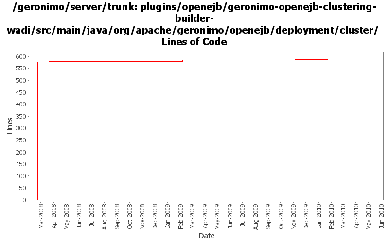

[root]/plugins/openejb/geronimo-openejb-clustering-builder-wadi/src/main/java/org/apache/geronimo/openejb/deployment/cluster

| Author | Changes | Lines of Code | Lines per Change |
|---|---|---|---|
| Totals | 14 (100.0%) | 630 (100.0%) | 45.0 |
| gdamour | 4 (28.6%) | 578 (91.7%) | 144.5 |
| djencks | 4 (28.6%) | 26 (4.1%) | 6.5 |
| rickmcguire | 5 (35.7%) | 23 (3.7%) | 4.6 |
| gawor | 1 (7.1%) | 3 (0.5%) | 3.0 |
fix use of GBeanInfo
1 lines of code changed in 1 file:
GERONIMO-5030: Initial refactoring of some of the module deployment code to support deployment of Bundles. Also, implemented rfc66 extender that can actually deploy WABs with simple servlets and jsps.
3 lines of code changed in 1 file:
Clean up some of the xmlbeans usage in tomcat
3 lines of code changed in 2 files:
Clean up some of the xmlbeans usage in openejb
3 lines of code changed in 2 files:
openejb cleanup changes
17 lines of code changed in 1 file:
GERONIMO-4531, GERONIMO-4523 Simplify builder collections. Make security principal-role mappings independent of the application
10 lines of code changed in 1 file:
GERONIMO-4258 clean up some naming constant usage
1 lines of code changed in 1 file:
*** Definition of annotations streamlining the definition of GBeanInfos.
* @GBean: optional annotation defining the name and j2eeType of a GBean.
If this annotation is not specified, then the default name is assumed to be
the class (simple) name and the default j2eeType is GBean.
* @Priority: optionalannotation defining the priority of a GBean.
* @ParamSpecial: annotation defining a GBean special attribute to be
injected.
* @ParamAttribute: annotation defining the GBean attribute to be injected.
* @ParamReference: annotation defining the GBean reference to be injected.
* @Persistent: annotation for setter methods turning the corresponding GBean
attributes into persistent attributes.
* @Reference: annotation for setter methods turning the corresponding GBean
attribute into a GBean reference.
Note that at most one constructor must be annotated with @ParamSpecial,
@ParamAttribute or @ParamReference.
*** Add a GBeanInfo factory strategy, GBeanInfoFactory, which allows us to
plug-in an annotation based GBeanInfo factory implementation.
*** Use annotation based GBeanInfo declaration for clustering related GBeans.
*** Use xbean-reflect to build GBean instances.
This fixes GERONIMO-3952 - Definition of GBeanInfo via annotations
1 lines of code changed in 1 file:
avoid a likely NPE
14 lines of code changed in 1 file:
1. Add SessionManagerListener to the clustering API. This allows clients
of local SessionManagers to receive callbacks when corresponding
remote SessionManagers join or leave the cluster.
2. Arbitrary WADI clustered services can now be registered: distributed
services are wrapped within ClusteredServiceHolder GBeans which are injected
to BasicWADISessionManager and registered with the underlying WADI
ServiceRegistry.
3. Add support for clustering of SFSBs.
The structure mirrors the one applied for the clustering of Jetty and
Tomcat, i.e. two modules and two configurations are added:
- geronimo-openejb-clustering-wadi: defines a ClusteredRPCContainer
implementation for SFSBs and infrastructure components maintaining a
bookkeeping of the connection addresses a clustered SFSB client can connect
to. The monitoring components, i.e. NetworkConnectorMonitor and
NetworkConnectTracker, works as follows:
o When an OpenEJB NetworkConnector service starts, NetworkConnectMonitor
registers the address of this NC with the clustered service
NetworkConnectorTracker and this for all the locally running clustered SFBS
deployments.
o When an OpenEJB NC services stops, NCM executes an unregisteration reverting
the effects of a NC service start.
o When a clustered SFSB deployments starts, NCM registers its deployment id
with the clustered service NCT for all the locally running NCs addresses.
o When a clustered SFSB deployment stops, NCM executes an unregisters reverting
the effects of a deployement start.
o When a node hosting an EJB module having clustered SFSBs stops or fails, NCM
updates the local NCT so that all the connection addresses registered for
all the clustered SFSB deployments of this node are removed.
- geronimo-openejb-clustering-builder-wadi: defines a builder to handle the
new substitution group element 'clustering' added to geronimo-openejb-2.0.xsd.
The clustering builder works nearly the same than for Jetty and Tomcat except
for the following specificities:
o A (WADI) clustered NCT service is registered.
o The container id for the clustered SFSBs is set to the Geronimo provided
clustered SFSB container implementation.
- openejb-clustering-wadi: declares Geronimo provided clustered SFSB
container implementation.
- openejb-clustering-builder-wadi: declares clustering builder.
577 lines of code changed in 3 files: